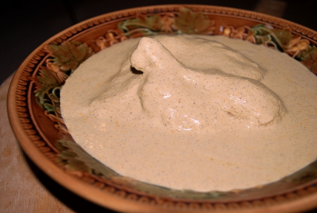

Home
Satsivi

Satsivi is a classic Georgian dish made of poultry (usually chicken or turkey)
served in a rich, creamy walnut-garlic sauce. The word "satsivi" actually refers to the
cold walnut sauce, not the meat itself.
Key Features
- Served cold (traditionally during winter holidays)
- Sauce is thick, silky, and intensely aromatic
- Flavored with traditional Georgian spices
Basic Ingredients
- Ground walnuts
- Garlic
- Onions
- Georgian spices (usually khmeli-suneli, blue fenugreek, coriander)
- Vinegar or wine vinegar
- Salt & Pepper
- Sometimes a bit of broth to thin the sauce
- Poultry (chicken or turkey), cooked separately and then cooled in the sauce
Step by Step Guide
Cook the chicken
- Boil the chicken in salted water until fully cooked
- Remove chicken let it cool and cut into serving pieces
- Save the broth, you'll need it for the sauce
Prepare the Walnut Paste
- Grind walnuts very finely (almost like a paste)
- Add garlic and grind together again
- Mix in:
- khmeli-suneli
- blue fenugreek
- ground coriander
- turmeric
- salt & Pepper
Make the Sauce
- Finely chop and saute the onion until soft and translucent
- Add the walnut paste to the pan and stir gently
- Slowly add warm chicken broth, little by little, until the sauce becomes thick but pourable
- Add the vinegar to taste
COmbine & Simmer
- Add the cooked chicken pieces into the walnut sauce.
- Simmer on very low heat for 10-15 minutes, stirring gently so it doesn't burn
- Adjust salt, pepper, and vinegar
Cool completely
Satsivi is server cold, so let it cool to room temperature, then refrigerate for several hours or overnight
Serve
- Serve chilled with bread, mchadi (cornbread), or boiled rice
- The sauce should be thick, creamy, and aromatic